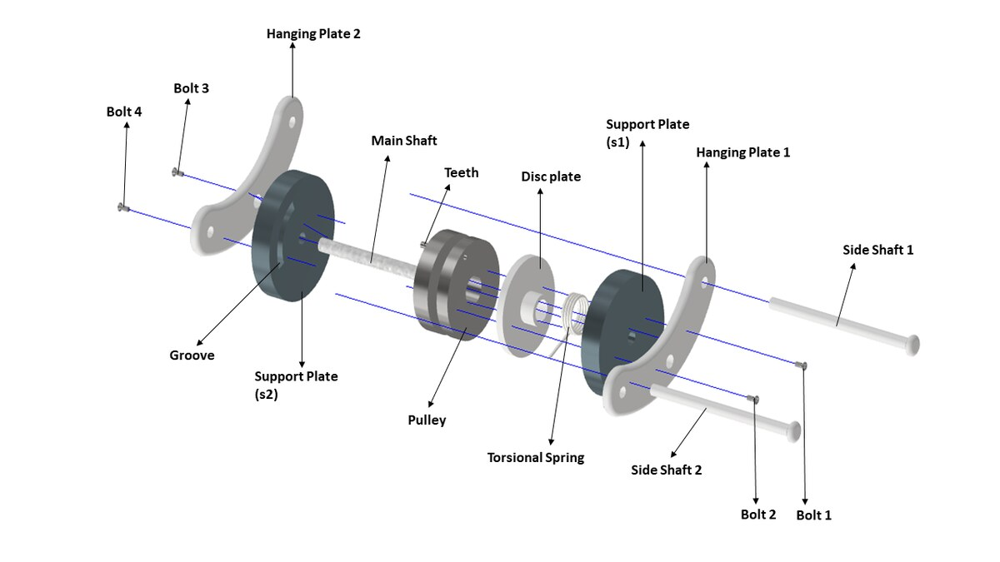
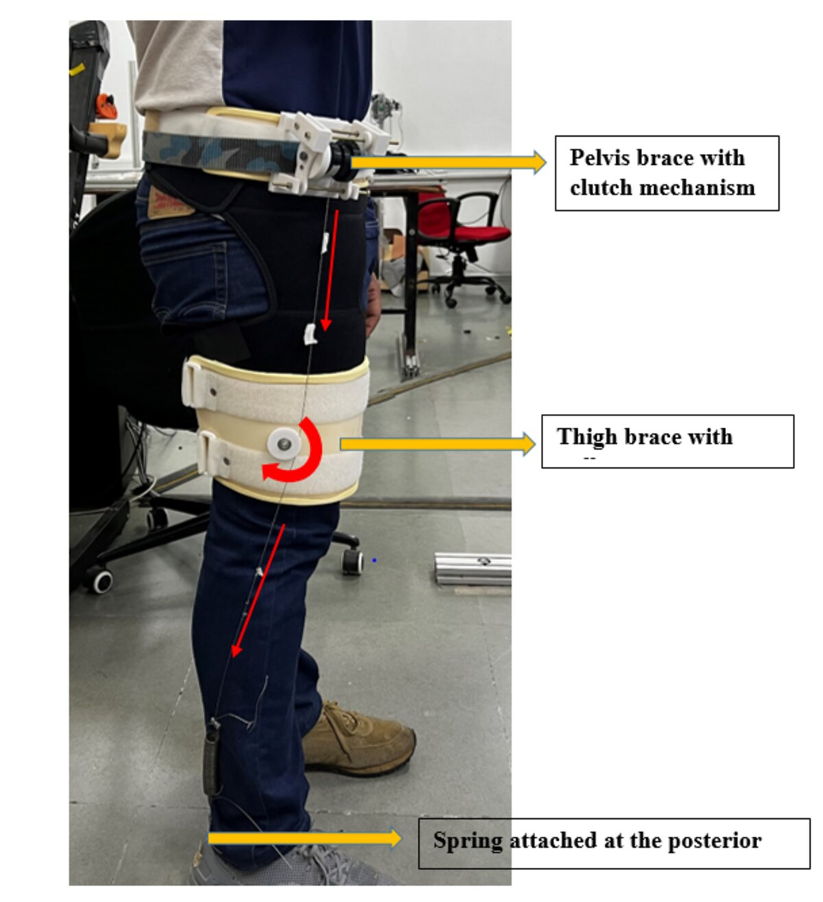
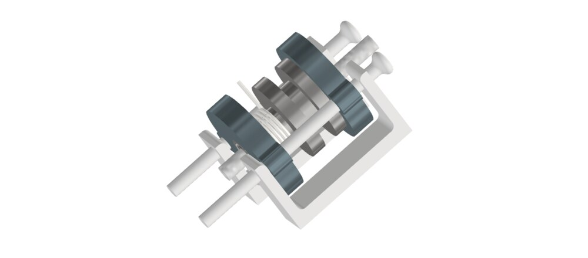
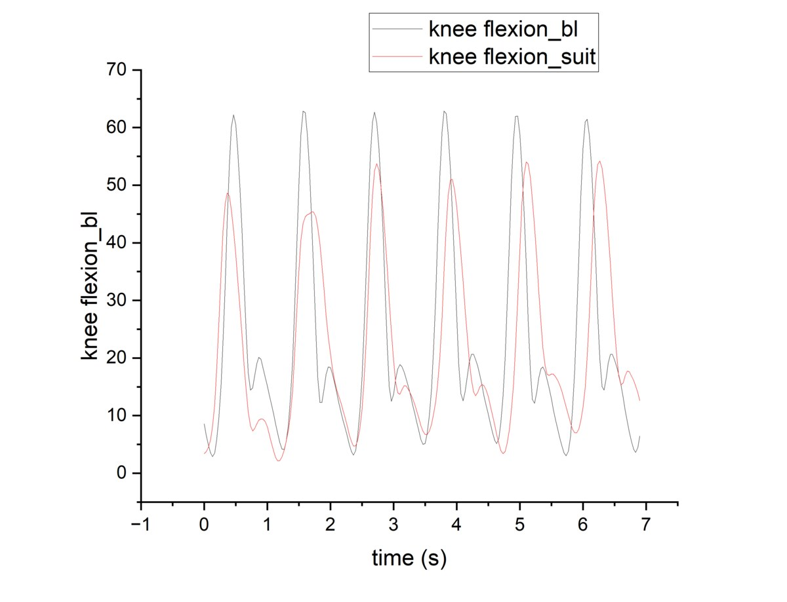
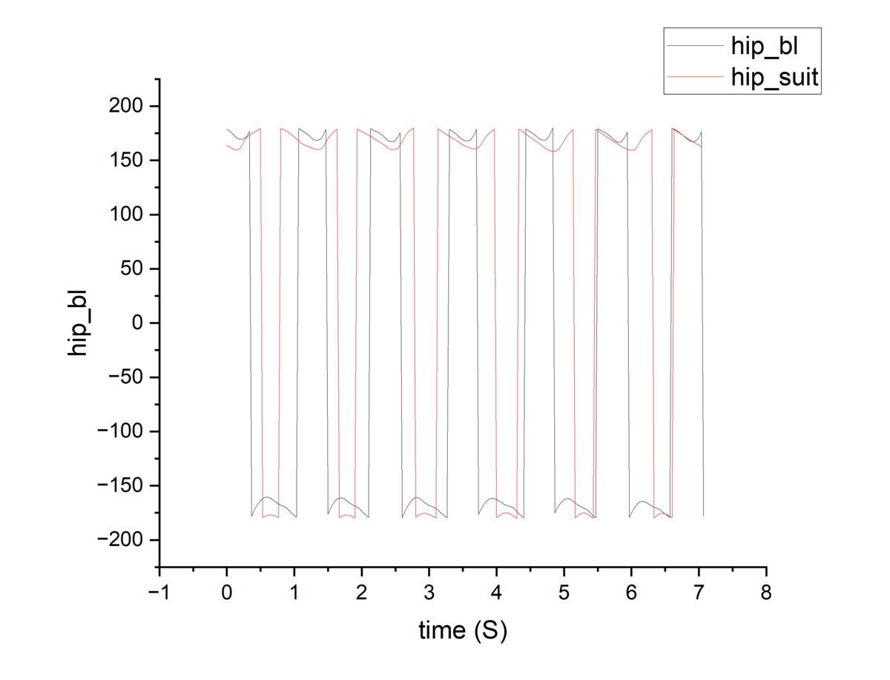
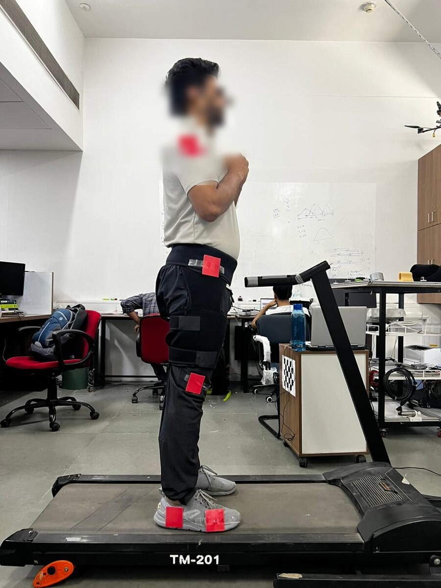

Passive Clutch & Cable Routing
Posture-assist exo-mechanism for walking

◇ PROBLEM
Powered exoskeletons that assist gait and posture are heavy, costly and battery-limited, which keeps mobility assistance out of reach for everyday rehabilitation use.
◈ SOLUTION
A passive clutch and cable-routing mechanism — a pelvis brace clutch, thigh brace and posterior spring — that stores and releases energy at the right phase of the gait cycle to assist posture without motors, validated in OpenSim across loaded and unloaded walking.
OVERVIEW
The mechanism routes a cable through a clutch mounted on a pelvis brace, coupling to a thigh brace and a posterior spring. Timed to the gait cycle, it stores energy and returns it as posture assistance — delivering support with no actuators, motors or batteries.
I focused on the mechanical design, movement assistance and cable-path optimisation, then validated the concept in OpenSim with inverse kinematics and CMC / static optimisation. Gait testing showed the suited knee-flexion profile tracking the baseline closely while redistributing load — evidence the passive assist works without disrupting natural walking.
KEY POINTS
- Fully passive — pelvis clutch, thigh brace, posterior spring.
- Energy stored and released in phase with the gait cycle.
- OpenSim validation: IK + CMC / static optimisation, loaded vs unloaded.
- Suited knee-flexion tracks baseline while redistributing load.
GALLERY





STACK & TOOLS
◆ Inverse kinematics + CMC / static optimization across load conditions.